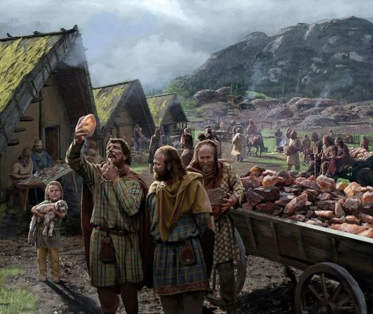

Село Равнинное известно как крупнейшее селение на равнинах между столицей Идрий и городом Виксель на Востоке. Это ключевая точка отдыха для купцов, путишественников и беглых эльфов с запретного материка.

Народ здесь приветливый, простой и отзывчивый, люди торгуют, сеят и разводят скот. У каждого свое ремесло и чаще приветствуется живой обмен, нежели денежный торг. Преимущественно население состоит из людей, однако старостой села является старенький высший эльф. Тут рады всем и к приезжим у местных жителей особое гостеприимство.
В селе имеется купеческая торговая улица на которой останавливаются проезжие торговцы, два небольших колодца, знахарь, несколько общих домов, которые работают как отели, одна местная таверна "Хмельной Тролль" и даже казарма в которой молодые люди из местного населения могут стать стражей и обучатся военному делу.
Рядом с Равнинным проходит главный торговый путь в столицу Идрий. Уровень преступности здесь низкий, однако на село переодически делают набеги голодные тролли, которые понимают, что легче взять готовое, нежели охотиться.
Отличается оно от деревень, помимо размеров, тем, что в нем стоит небольшая деревянная церковь Азарис, школа при ней и частокол защищающий селение.